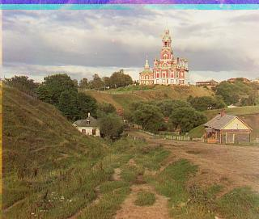
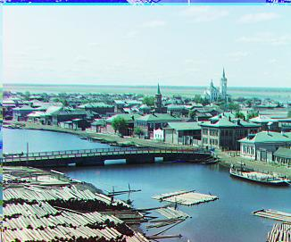
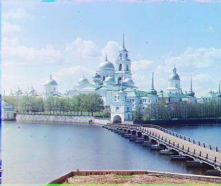
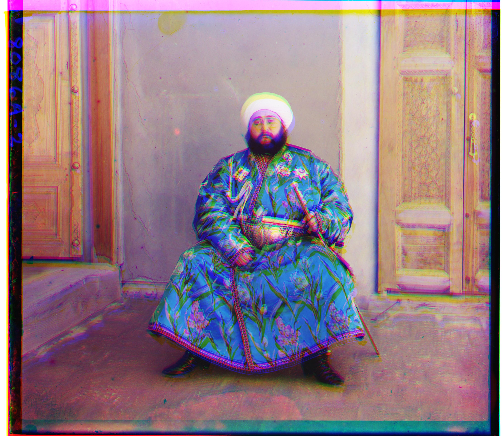
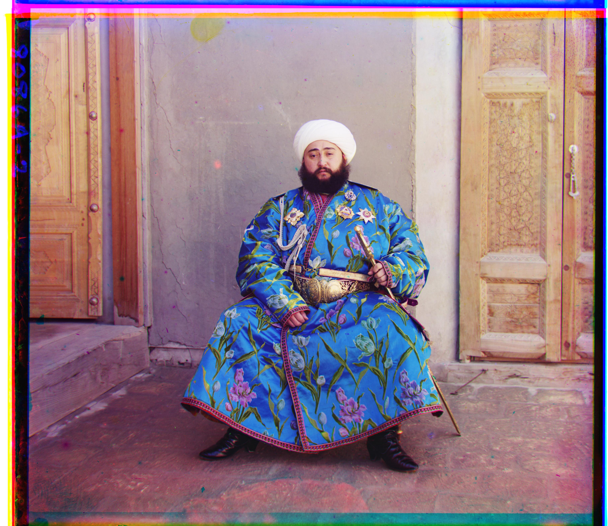

In Project 1, we explore the idea of image processing on the Prokudin-Gorskii collection. Each scene has three grayscale plates taken with different color filters. With proper alignment and compositing, we can render a color image.
Below we run an exhaustive search (radius of 30 px) and score with Sum of Squared Differences (SSD). These low-res images allow us to execute a brute-force approach, but we will change our approach later for high-res images.
Top row shows cathedral, tobolsk, and monastery



Below, we can see the difference between using pixel brightness (as we are doing above) to determine optimal alignment versus using an edge detector such as the Sobel edge detector. On the left, we have the Emir aligned using Pixel Brightness. On the right, we have the Emir aligned using Edge Detection. The Sobel method computes the
image-intensity gradient via x/y derivatives and uses the gradient magnitude for robust matching.


Below we use Sobel Edge Detectors instead of checking the differences between pixel brightness levels. This allows for a more robust search and more accurate image alignments. We use OpenCV's Sobel operator to convolve over the images, making sure to crop the edges when we are checking the differences in order for NCC to focus on the middle areas of the image that matter the most. OpenCV's Sobel operator convolves over the channel in the x direction and y direction and then are combined together to find the magnitude of the gradient. This gradient I mention is the image-intensity gradient. Because we are now dealing with high resolution tif images, we need to implement a Gaussian Pyramid speedup scheme, where we recursively downscale the images, find an optimal image alignment among the color channels at a small scale, and then as we pop back up the recursive stack, rescale the displacements we found. As we scale back up, at each level we run a fine-grain exhaustive search at that level to make sure our displacement is as accurate as possible. The results below display my algorithms outputs of using Sobel + NCC with a Gaussian Pyramid speedup scheme for efficient runtime